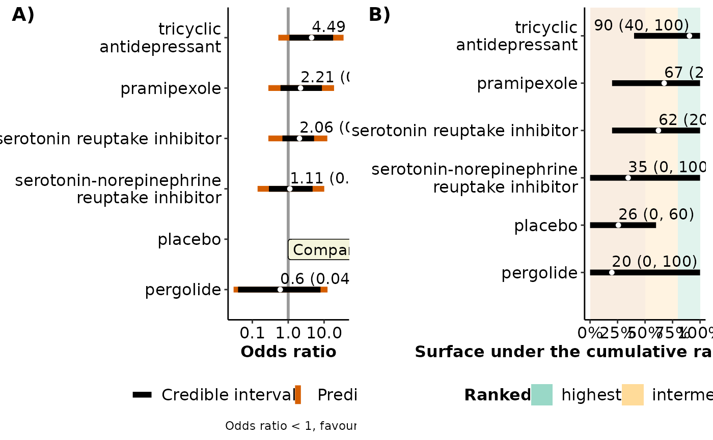

Comparator-specific forest plot for network meta-analysis
Source:R/forestplot_function.R
forestplot.RdProvides a forest plot with the posterior median and 95% credible and prediction intervals for comparisons with the selected intervention (comparator) in the network, and a forest plot with the corresponding SUCRA values.
Value
A panel of two forest plots: (1) a forest plot on the effect estimates and predictions of comparisons with the selected intervention in the network, and (2) a forest plot on the posterior mean and 95% credible interval of SUCRA values of the interventions (Salanti et al., 2011).
Details
The y-axis of the forest plot on effect sizes displays the
labels of the interventions in the network; the selected intervention that
comprises the compar argument is annotated in the plot with the
label 'Comparator intervention'.
For each comparison with the selected intervention, the 95% credible and
prediction intervals are displayed as overlapping lines in different
colours. The corresponding numerical results are displayed above each line:
95% credible intervals are found in parentheses, and 95% predictive
intervals are found in brackets. Odds ratios, relative risks, and ratio of
means are reported in the original scale after exponentiation of the
logarithmic scale.
The y-axis for the forest plot on SUCRA values displays the labels of the interventions in the network. The corresponding numerical results are displayed above each line. Three coloured rectangles appear in the forest plot: a red rectangle for SUCRA values up to 50%, a yellow rectangular for SUCRA values between 50% and 80%, and a green rectangle for SUCRA values over 80%. Interventions falling at the green area are considered as the highest ranked interventions, whilst interventions falling at the red area are considered as the lowest ranked interventions.
In both plots, the interventions are sorted in descending order of their SUCRA values.
forestplot can be used only for a network of interventions.
Otherwise, the execution of the function will be stopped and an error
message will be printed on the R console.
References
Salanti G, Ades AE, Ioannidis JP. Graphical methods and numerical summaries for presenting results from multiple-treatment meta-analysis: an overview and tutorial. J Clin Epidemiol 2011;64(2):163--71. doi: 10.1016/j.jclinepi.2010.03.016
Examples
data("nma.liu2013")
# Show the first six trials of the dataset (one-trial-per-row format)
head(nma.liu2013)
#> study t1 t2 t3 r1 r2 r3 m1 m2 m3 n1 n2 n3
#> 356 Richard, 2012 1 3 4 15 16 23 6 8 4 39 42 34
#> 357 Barone, 2010 1 2 NA 27 38 NA 19 20 NA 152 144 NA
#> 358 Weinbtraub, 2010 1 3 NA 2 5 NA 6 6 NA 27 28 NA
#> 359 Menza, 2009 1 4 5 4 2 9 6 7 5 17 18 17
#> 360 Devos, 2008 1 4 5 4 8 11 0 2 1 16 15 17
#> 361 Antonini, 2006 4 5 NA 10 8 NA 4 4 NA 16 15 NA
# Read results from 'run_model' (using the default arguments)
res <- readRDS(system.file('extdata/res_liu.rds', package = 'rnmamod'))
# The names of the interventions in the order they appear in the dataset
interv_names <- c("placebo", "pramipexole", "serotonin-norepinephrine
reuptake inhibitor", "serotonin reuptake inhibitor", "tricyclic
antidepressant", "pergolide")
# Create the forest plot
forestplot(full = res,
compar = "placebo",
drug_names = interv_names)
